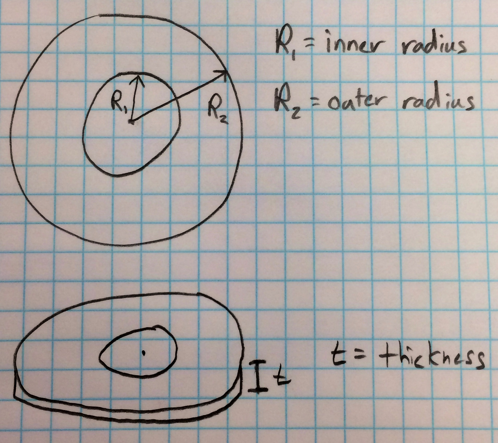

Disk Acceleration Calculator
This calculator will calculate how long it takes to bring a
disk up to a certain rpm when a torque is applied. Other
parameters include inner radius of the disk, outer radius of
the disk, density of the disk, and thickness of the
disk. Units are specified.
Requirements
r_2 > r_1, r_2 > 0, thickness > 0, angular-speed > 0, torque >
0.
